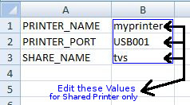

Printer SetUp

(1): Make Sure You Have Adobe or Foxit Reader (Required For Ledger/InkJet Printer)
And This PDF Viewer must be selected as Your DEFAULT PDF Viewer
यह सुनिश्चित करें की आप के Computer में Adobe या Foxit Reader Install हो
और वो डिफ़ॉल्ट व्यूअर (Default Viewer हो)
(Default Viewer मतलब किसी भी .pdf फाइल को क्लिक करने पर वो फाइल
Adobe या Foxit Reader में ही खुल जाये। )
यहाँ क्लिक करे, पढ़ें और डाउनलोड करें (Download PDF Viewer)
(2): Go to Device and Printer >
Select Your Printer > Right Click On it > Set as Default Printer(select)
*** RMS Send PrintOut Copy to DEFAULT PRINTER Only
Device and Printer पर जाएँ, अपना प्रिंटर चुने, इसी विकल्प पर mouse
का फोकस लेकर mouse का right click करें और कई विकल्पों में ऊपर की
तरफ 'Set as Default Printer' के सामने सही का निसान बनायें(Select करें)े। )
(3): Right Click on your Priter > Printer Properies > Ports (select)
USB001 or LPT (USB001 for USB cabel using in Printer and LPT for LPT Cabel)
यही पर ही फिर से mouse का फोकस लेकर mouse, का right click करें और
कई विकल्पों में से एक (ऊपर से नीचे की तरफ तीसरा विकल्प Printer Properies चुनें )
एक Box खुलेगा जिसमे PORT विकल्प चुने ; अब PORT का नाम लिखें जैसे : LPT1, USB001
(4): If you are using Parallel or Shared Printer
Open RMSSOFT (Directory) > resources (Directory) > printer.csv (Open)
Edit: PRINTER_NAME: PRINTER_PORT: SHARE_NAME:
Save and Close.
